CH05 compact lettered review

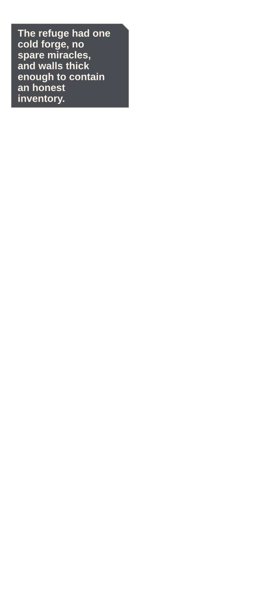
P001 · high · STORY
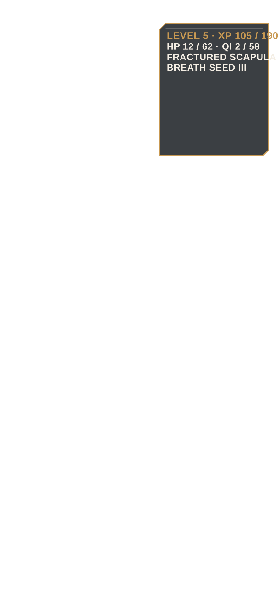
P002 · low · STORY
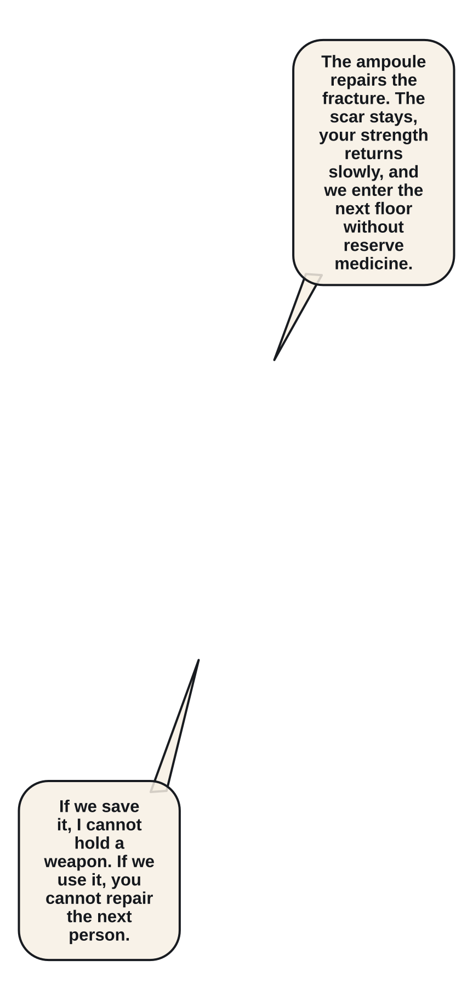
P003 · low · STORY P004 · moderate · STORY
P004 · moderate · STORY
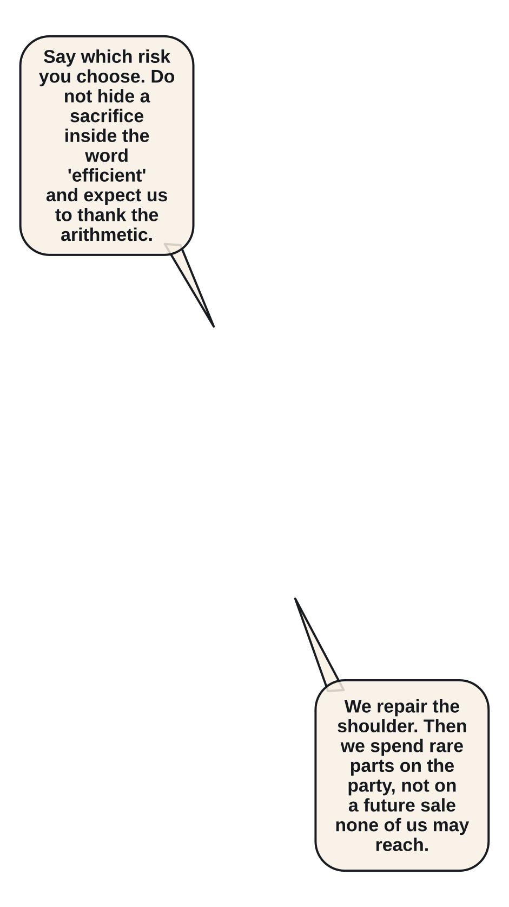
P005 · low · STORY
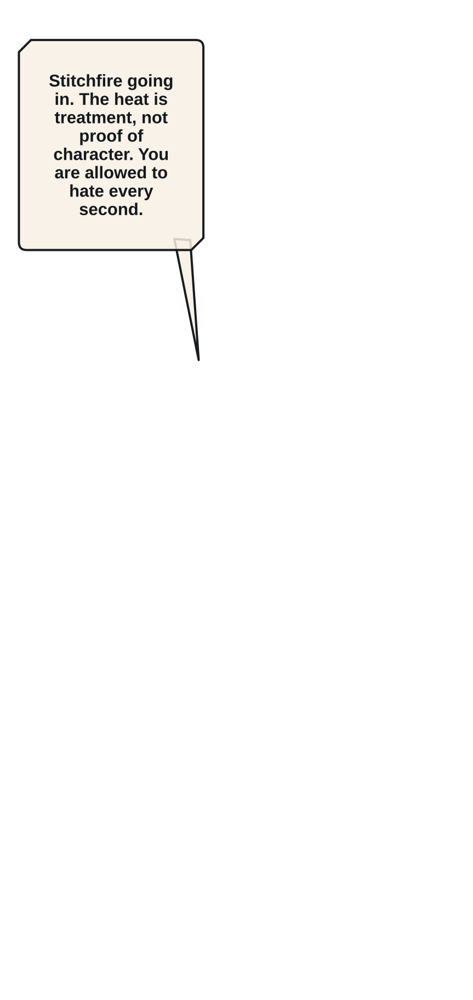
P006 · low · STORY
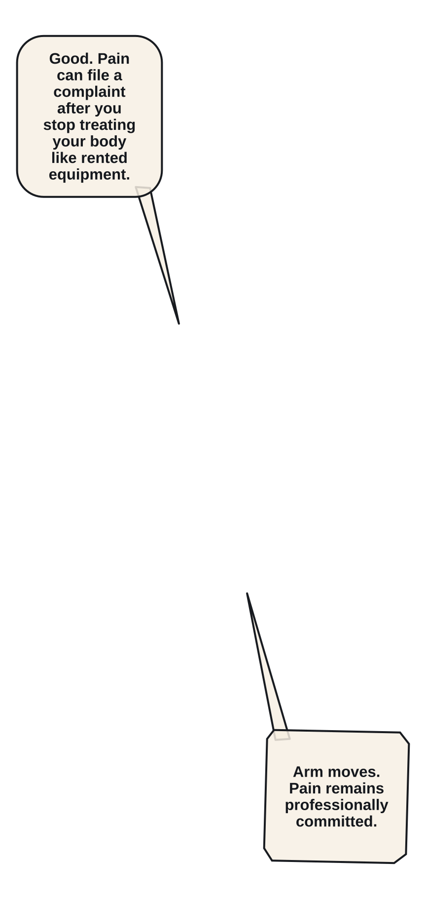
P007 · low · STORY
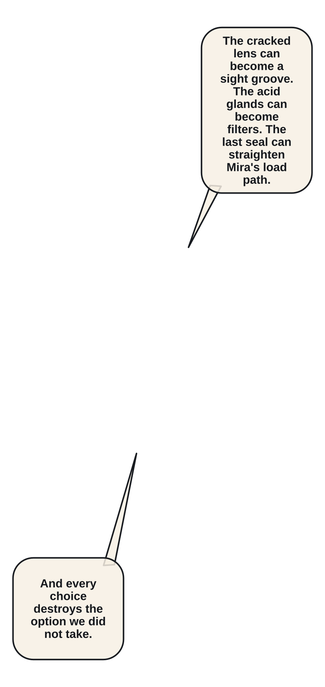
P008 · moderate · STORY
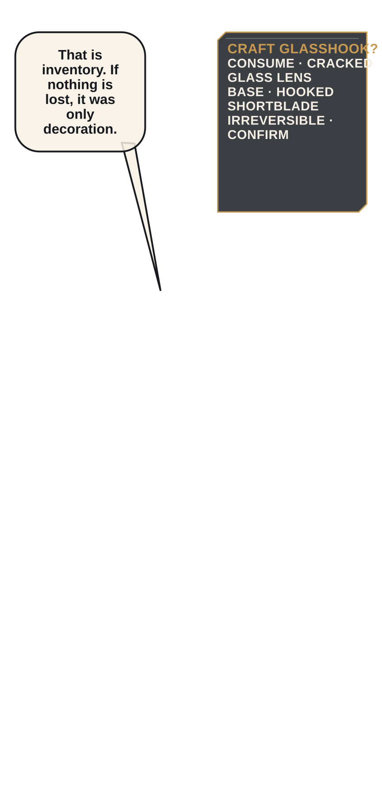
P009 · low · STORY P010 · low · ACTION
P010 · low · ACTION P011 · high · ACTION
P011 · high · ACTION
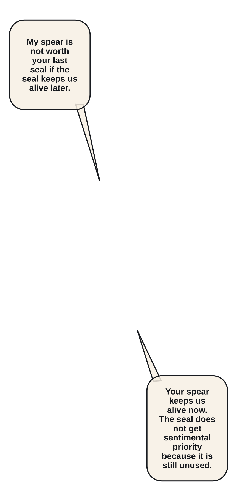
P012 · low · STORY P013 · low · STORY
P013 · low · STORY P014 · low · ACTION
P014 · low · ACTION P015 · moderate · ACTION
P015 · moderate · ACTION P016 · low · ACTION
P016 · low · ACTION P017 · low · ACTION
P017 · low · ACTION
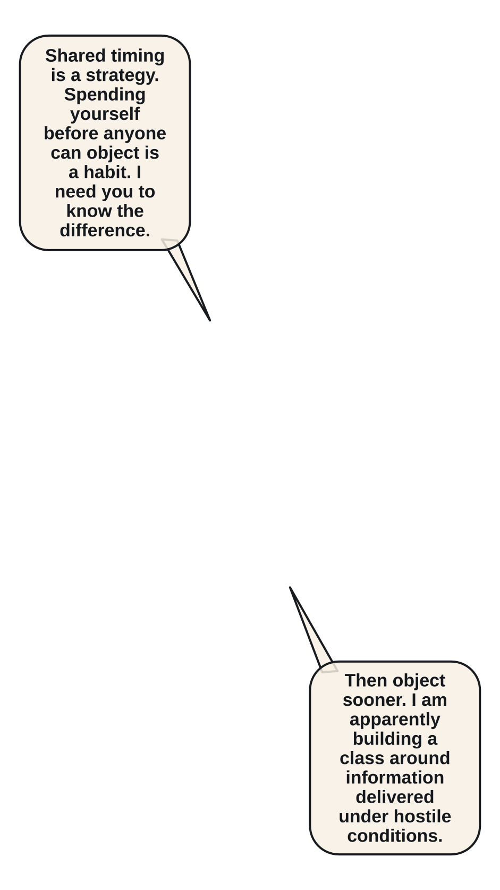
P018 · moderate · STORY
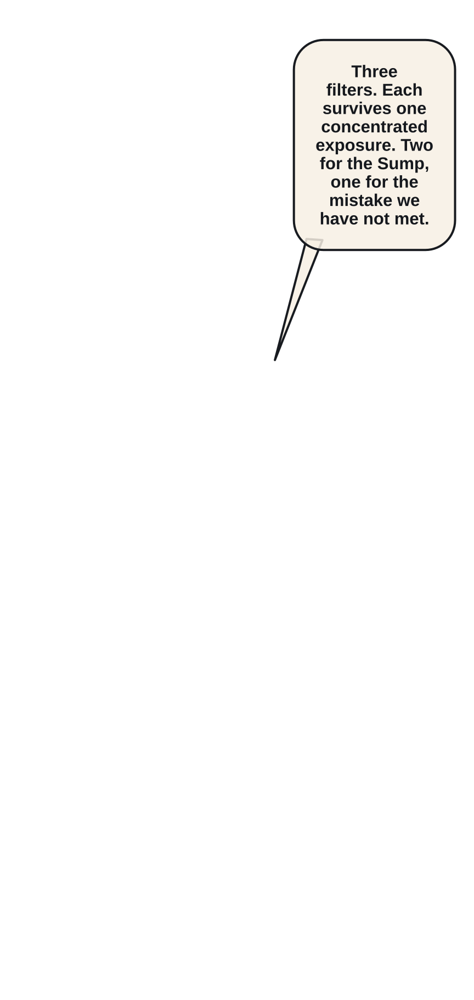
P019 · low · STORY
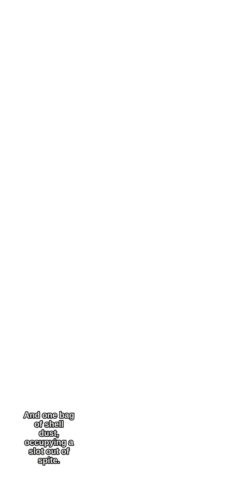
P020 · low · STORY P021 · moderate · STORY
P021 · moderate · STORY P022 · low · STORY
P022 · low · STORY P023 · low · STORY
P023 · low · STORY
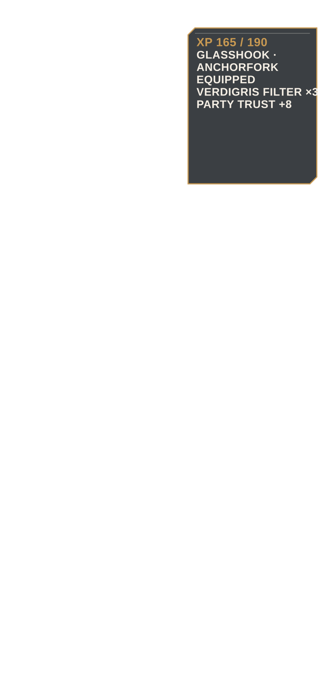
P024 · moderate · STORY